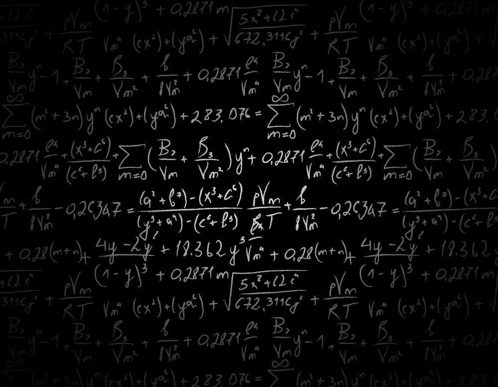
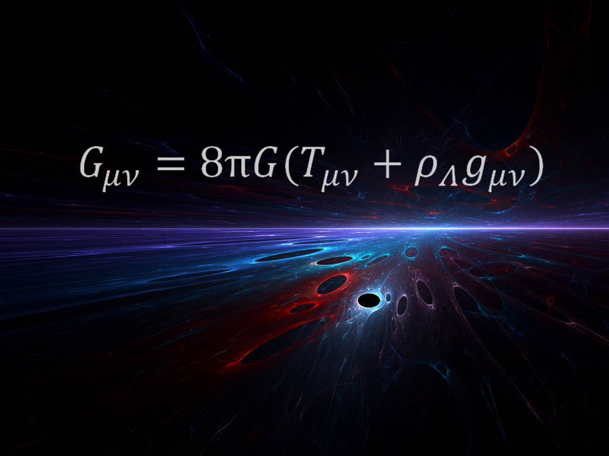
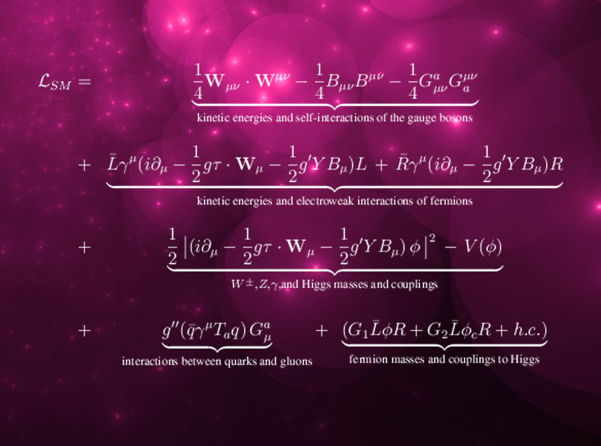
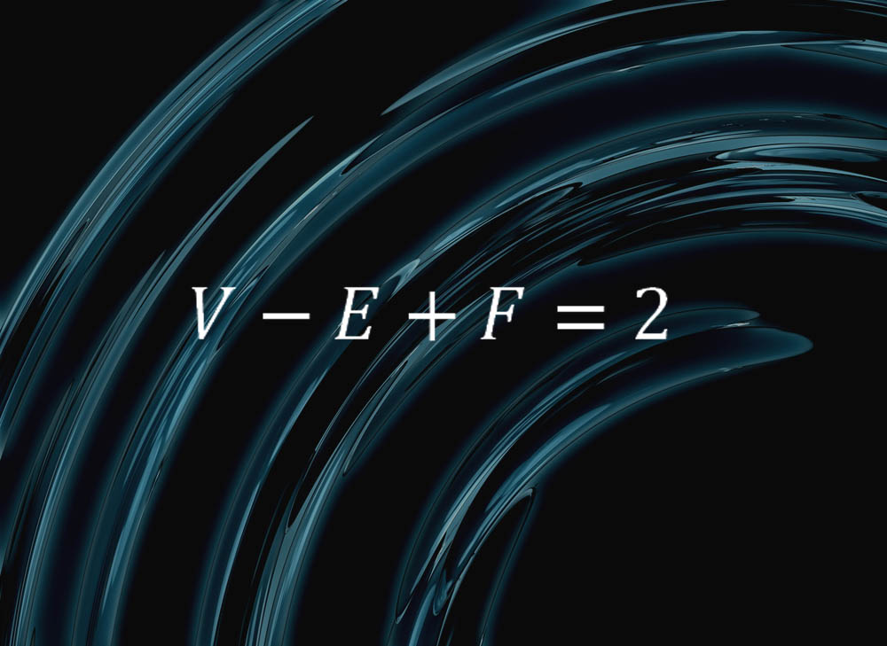
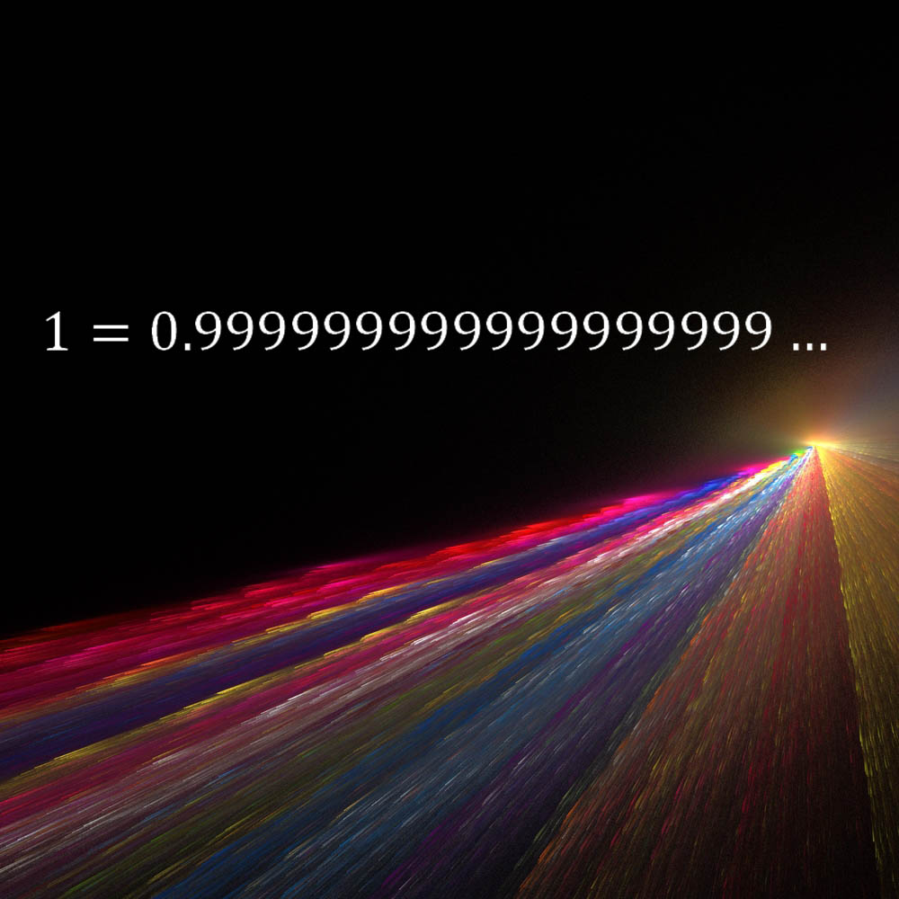
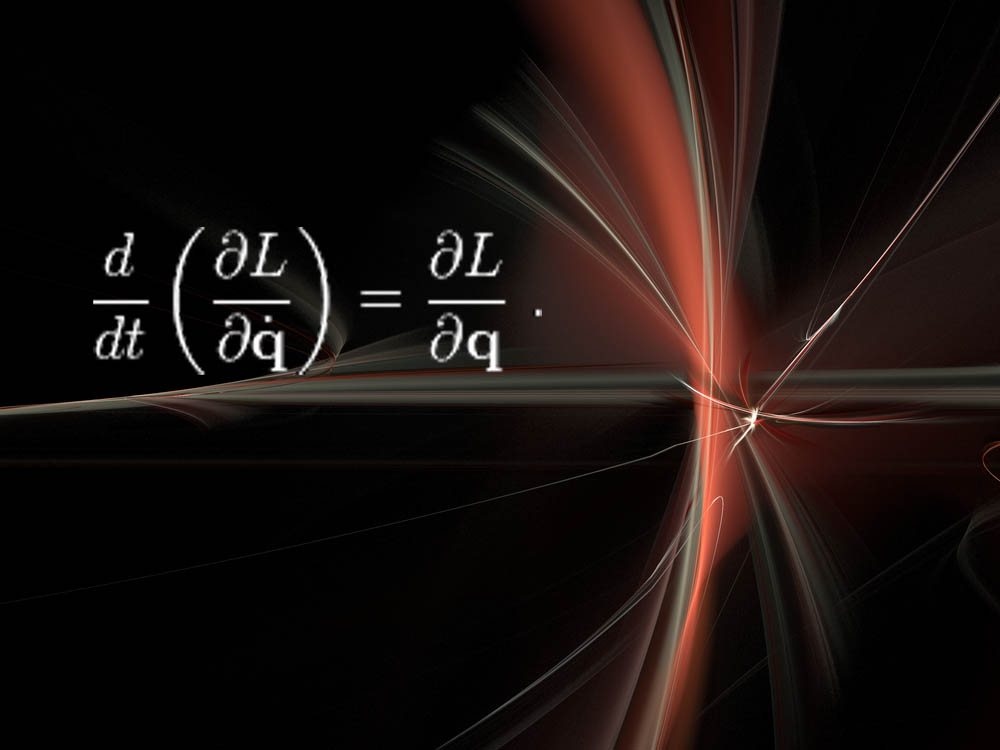
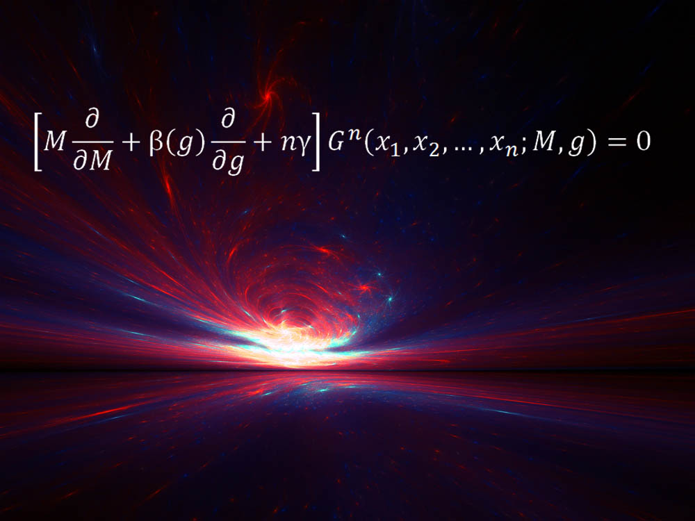

世界上那些最美的方程
目录
【译者按】：对于什么是最美的数学方程，在 Quora 上，目前榜首为复分析领域的欧拉方程（后文提到的欧拉方程是在几何学与代数拓扑学领域的形式），有 3300 多个投票：
\begin{equation*} \mathbf{e}^{i\pi} + 1 = 0 \end{equation*}其次是麦克斯韦方程：
\begin{align*} \nabla \cdot \mathbf{E} &= \frac{\rho}{\epsilon_0} \\ \nabla \cdot \mathbf{B} &= 0 \\ \nabla \times \mathbf{E} &= - \frac{\partial \mathbf{B}}{\partial t} \\ \nabla \times \mathbf{B} &= \mu_0 \left( \mathbf{J} + \epsilon_0 \frac{\partial \mathbf{E}}{\partial t} \right) \end{align*}
简介

数学方程不仅实用——很多还非常优美。许多科学家承认，他们经常喜欢特定的公式，不仅仅是因为它们的功能强大，还因为它们的形式优雅、简洁及其中所蕴涵的诗一般的真理。
当某些特别著名的方程，比如爱因斯坦的质能方程 \(E = m c^2\), 在公众面前享誉极盛时，许多公众不那么熟悉的方程在科学家那儿却拥者甚众。 LiveScience 咨询了许多物理学家、天文学家和数学家，将他们喜爱的数学公式罗列如后：
广义相对论

上述公式是 爱因斯坦 于 1915 年所发现的划时代的 广义相对论 方程中的一部分。该理论让科学家对引力的认识发生了革命性的变化，引力在这儿是空间与时间结构的一种弯曲。
“让我惊奇的时，这样的一个方程就揭示了全部的时空真相。”太空望远镜科学研究所的天体物理学家 Mario Livio 如是说，他声明此方程为自己的最爱。“爱因斯坦所有的真正的天才之处都蕴含在这个方程中。”〖英文扩展阅读：爱因斯坦测验：考考你的天才知识〗
“方程的右侧描述了我们宇宙的能量构成 (包括促使我们宇宙加速膨涨的 暗能量)，” Livio 解释道，“左侧是时空的几何结构。此方程揭示了这样的事实，在爱因斯坦广义相对论中，质量和能量决定了几何，以及伴随的时空弯曲，它显示为我们所说的引力。”〖英文扩展阅读：引力的六个不可思议的现实〗
“这是个非常优雅的方程。”纽约大学物理学家 Kyle Cranmer 解释说，此方程还揭示了时空、物质和能量之间的关系。“此方程告诉了你它们之间是如何关联的——比如，太阳的存在如何导致了时空弯曲，从而令地球沿着其轨道运转，等等。它还告诉你宇宙自从 大爆炸 之后是如何演化的，它还预言了黑洞的存在。”
标准模型

另一个物理学理论中的君王，标准模型，它描述了构成我们目前宇宙的所有可见的基本粒子。
这个理论可浓缩为一个主方程，即标准模型的拉格朗日量（该名字来自于以十八世纪法国数学家和天文学家约瑟夫·路易斯·拉格朗日），加利福尼亚 SLAC 国家加速器实验室的 Lance Dixon 在他的著名公式中采用了这个量。
“它成功地描述了岂今在实验室中能够观测到的所有的基本粒子和力——除了引力”, Dixon 向 LiveScience 解释道。“这当然包括了最新发现的希格斯（疑似）玻色子，即公式中的 \(\phi\). 它与量子力学和狭义相对论完全自治。”
标准模型理论还没有与广义相对论统一起来，所以它还不能够描述引力。〖英文扩展阅读： 图释标准模型〗
微积分

前两个方程描述了我们宇宙的特定方面，另一个最爱的方程则可用于几乎所有场合。微积分基础理论是微积分学数学方法的基石，它将两个主要思想连接了起来，即积分与求导的概念。
“简单来讲，它表明，平滑连续的量的净改变，比如经过一段时间区间后的旅行距离（也就是说，时间区间端点的量的差值），等于该量的变化率的积分，亦即，速度的积分，” FordHam 大学数学系主任 Melkana Brakalova-Trevithick 如是说，她将此方程选为最爱。“微积分的基础理论 (FTC) 允许我们基于整个区间的速率变化来测定一个区间的净变化。”
微积分的萌芽从古代就开始了，但其完善集中在十七世纪并归功于 艾萨克·牛顿，他使用微积分解释了行星环绕太阳的运动。
毕达哥拉斯定理
一个经久不衰的方程，就是著名的毕达哥拉斯定理，每个几何初学者都要学习它。
这个方程说明，对任意直角三角形，它的弦的平方（面对直角的最长的边）等于其余两边长的平方和。
“第一个令我惊奇的数学事实就是毕达哥拉斯定理。”康奈尔大学的数学家 Daina Taimina 如是说，“当我还是孩子时，它就令我惊奇不已，它不仅在几何中有用，在数论中也一样！”〖英文扩展阅读：五个令人惊奇的数学事实〗
欧拉公式

这个简单的公式蕴含着球体的纯粹本质：
“它表明，如果把一个球切割成面、棱和顶点，令 \(F\) 表示面数, \(E\) 表示棱数, \(V\) 表示顶点数，你始终能得到 \(V - E + F = 2\),”马萨诸塞州 Williams 学院的一名数学家 Colin Adams 解释说。
“因此，比如以四面体为例，它有 4 个三角形，6 根棱和 4 个顶点，”Adams 继续解释，“如果你使劲吹一个表面柔软的四面体，它会胀成一个球，故这样看来，一个球可以切割成四个面、六根棱和四个顶点。我们就有了 \(V - E + F = 2\). 对于金字塔方锥也一样，它有五个面——四个三角形和一个正方形，八根棱和五个顶点。”对于任意其它的面、棱和顶点组合也一样。
“非常酷的事实！顶点、棱和面的组合提示了球体的一些非常基本的东西。”Adams 如是说。
狭义相对论

爱因斯坦又一次进入列表，这次是他的 狭义相对论 方程，它表明时间和空间不是绝对的概念，而是受观察者速度影响的相对概念。上面的方程表明，一个人在任意方向运动得越快，时间会愈加膨涨，或变得更慢。
“关键是它非常简洁。”欧洲核子中心位于日内瓦实验室的一名粒子物理学家 Bill Murray 说，“任何一名 A-级学生都会做，没有复杂的求导和线性代数。但它包含的是一种全新的观察世界的方式，一种对待现实和我们与它之间关系的全新态度。突然间，那个刚性的不变的宇宙被扫除干净了，取而代之的是一个人性的世界，它同你的观察相关。你从在宇宙之外的审视者变成了其中的一部分。但这个概念和数学可以被任何想学的人掌握。”
Murray 说，比起爱因斯坦后续理论中的复杂方程，他更偏爱狭义相对论方程。“我绝不会欣赏广义相对论中的数学。”他补充道。
1 = 0.999999999…

很简单的方程，它的意思是说, 0.999 紧跟着无限个小数位的 9, 其结果与 1 等价。这是康奈尔大学数学家 Steven Strogatz 的最爱。
“我爱的是它的简单——任何人都能够理解其意思——是的，多么刺激啊！”Strogatz 说。“许多人不相信这是真的。它也是优美的平衡。左侧代表数学的开始，而右侧则代表神秘的无限。”
欧拉－拉格朗日方程及诺特定理

“这非常抽象，但令人惊奇的强大。”NYU 的 Cranmer 说，“很酷的是，用这种方式来思考物理导致了物理学的许多主要革命，比如量子力学、相对论，等等。”
这儿, \(L\) 表示拉格朗日量，它代表一个物理系统的能量量度，比如弹簧、杠杆或基本粒子。“求解这个方程会让你明白系统会如何随时间演化。” Cranmer 解释说。
拉格朗日方程的一个副产品就是诺特定理，以二十世纪德国数学家 Emmy Noether 命名。“该定理对于物理学和对称论来说非常基础。”Cranmer 补充说，“简单地讲，该理论说，如果你的系统有一个 对称性，则必伴随一个守恒量。比如，今天的物理基本定律与明天是一样（时间对称性），这个思想则意味着能量是守恒的。物理定律在这儿的与在外太空是相同的，则意味着动量守恒。对称性在基础物理中是起推进作用的概念，这主要得益于〖诺特的〗贡献。”
Callan-Symanzik 方程1

“从 1970 年起, Callan-Symanzik 方程就是个非常重要的第一原则性的方程，尤其是用于描述朴素的观察者在 量子世界 中会如何失败。”Rutgers 大学的理论物理学家 Matt Strassler 说。
此方程有很多应用，其中包括物理学家用它来预测质子和中子的质量与尺寸，质子和中子是构成原子核的基本粒子。
基础物理告诉我们，两个物体之间的引力和电磁力与它们之间的距离成平方反比关系。简单来讲，这也适用于强核子力，该力把质子和中子捆绑起来构成了原子核，也是它将夸克捆绑起来构成了质子和中子。但是，微小的量子涨落会影响力与距离的依赖关系，这对强核力带来的影响是巨大的。
“这阻碍了此力在长距离处的衰减，结果导致对夸克的囚禁，迫使它们形成了质子和中子，从而构造了我们的世界。”Strassler 解释说。“Callan-Symanzik 方程的作用与这个巨大的难以计算的效应相关联，它〖当距离〗在大概质子尺寸上时很重要，〖当距离〗比质子尺寸小很多时它更敏感但更容易计算其效应。”
极小曲面方程

$$ \mathcal{A}(u) = \int_{\Omega} \left( 1 + \left| \nabla_u \right|^2 \right)^{1/2} dx_1 \dots dx_n $$
“极小曲面方程以某种方式形成了 美丽的肥皂薄膜，这个你可以用肥皂水滴到金属框中来制造。”Williams 学院的数学家 Frank Morgan 说，“此方程是非线性的，涉及到导数的幂和乘积，其中暗含的数学表现在肥皂薄膜的奇怪行为上。可以拿它与更多的大家熟悉的线性偏微分方程相比较，比如热传导方程，波动方程，以及量子力学中的薛定谔方程。”
欧拉线

纽约数学博物馆的奠基人 Glen Whiteney 选择了另一个几何定理，它与欧拉线有关，它以十八世纪瑞士数学家和物理学莱昂哈德·欧拉来命名。
“选择任一个三角形，”Whitney 解释说，“画一个包含此三角形的最小的圆，并找到其圆心。找到三角形的重心——如果把三角形从纸上切下来，针顶着重心可令它保持平衡。画出三角形的三条垂线（每个角垂直于对边的线），找到它们交汇的点。该定理是说，你刚才找到的同一个三角形的这三个点始终位于一条直线上，这条线就叫三角形的欧拉线。”
Whitney 说，这条定理蕴含了数学的美与强大，数学经常会用简洁、熟悉的形状提示出令人惊讶的模式。
备注
【文章来源】：
- The World's Most Beautiful Equations
- Clara Moskowitz, LiveScience senior writer
- January 28, 2013 05:24pm ET
- http://www.livescience.com/26660-most-beautiful-mathematical-equations.html
脚注:
Callan-Symanzik Equation, 中文有的译作“卡兰-吸齐克方程”，但并不统一，故仍使用其英文名称。